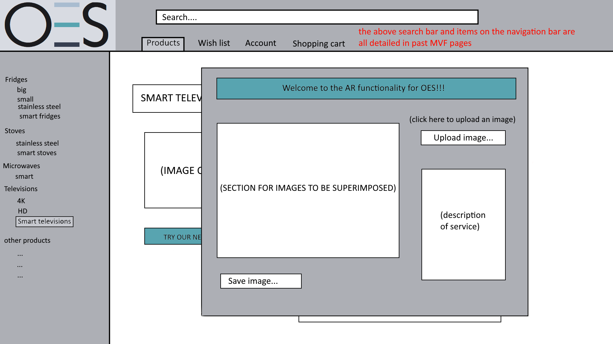

Customer Account - MVF 3 for OES website
Team member in charge of MVF - Nicholas Santosa
Part 1 - Original plans and low fidelity diagrams
Original plans -
Task Description - Allows customers to create an account for our store. The account could provide benefits in the long run for the customer. If they buy items from their account it could give them points which they can redeem for a discount or a prize. The account also can save the customers' wish-list and shopping cart.
Task Artefact - This feature allows customers to keep track of their usage of our website and which products they’ve bought or planning to buy. The points are gained from buying products from our store and can be saved up and used to get better deals on the products offered. The customer account will need a registry and a login on the website.
Estimated Time - The estimated time of completion for this MVF is 6 days, this will include the integration of wish lists with the customer account, creating all the pages for the account which includes; login, create account, forgot password and account details with an edit function, the registration of an account, login, account details page and saving all the accounts’ information.
Low fidelity diagrams -
Login/Forgot Password - This is the page where the user logs into their account. They can press the ‘forgot password?’ button and a pop-up window appears to allow the user to change their password.

Create an Account - This page is where the user can create an account if they currently don’t have one. It uses the use of Javascript to get correct information from the user and if incorrect the user won’t be able to proceed with their account creation.

Account Details - The account details contains all the details the user has inputted when creating their account, this also displays their account points. The points allow the user to redeem discounts or prizes from our store.

Account Edit - This page starts off displaying the current user details and are editable with the text boxes.
Part 2 - High fidelity, User stories and System Context Diagram
High fidelity prototype -
High Fidelity Prototype on InVision
Login/Forgot Password - First page is standard when the user clicks on the login button on the navigation bar. The second page is to demonstrate what happens when the ‘Forgot Password?’ button is clicked and the pop-up window appears. The third page demonstrate when the user enters their email and presses the ‘Get Code’ button.
Create an Account - This page demonstrates how the create account page will look. Once everything is filled in with no error messages the button is accessible and once clicked it will create the account and send the user to the login page to log into their new account.

Account Details - The first page is what happens when the user clicks onto the ‘Account’ on the navigation bar. When the user clicks on the ‘Edit Profile’ button it will change the page into a form demonstrated by the second page below. The form will allow the user to change their details and either cancel their change or save them updating their profile. Both buttons when clicked will lead back to the Account Details page (first page).
User stories -
User story 1 - Isaiah
Task: Create an account
Scenario: Isaiah has been looking around the store, but doesn’t have an account to his name. He’s planning to buy a fridge and wants to create an account to buy the fridge.
Acceptance criteria:
- Create an account is easy to find
- To create an account with ease
- Account details are entered correctly
User story 2 - Kelly
Task: Forgot their password
Scenario: Kelly has an existing account, but has forgotten her password and wants to log into her account.
Acceptance criteria:
- Forgot password is easy to find
- Email is sent to the right email address
- Code and password is entered correctly
User story 3 - Kevin
Task: Edits profile
Scenario: Kevin has an existing account and has moved houses and has moved banks, he wants to change the current details he has.
Acceptance criteria:
- Edit profile is easily understandable
- He edits the wrong field and cancels his changes
- Edit the all the fields and the information saves and updates
System context diagram for MVF 3 -